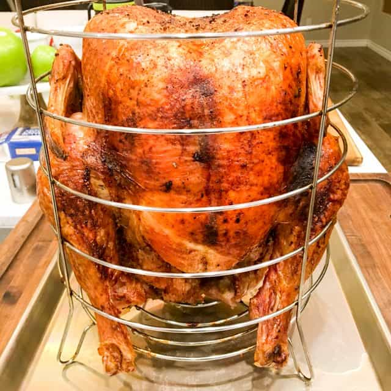

Air fry Turkey

alt="air fried turkey"
No Oil Air Fried Turkey
Ingredients
- Oil Free Electric Roaster
- Apple wood chips soaked in water
- 16 to 20 pound turkey cleaned dried with giblets and neck removed, thawed.
- quarters of butter at room temperature
- turkey seasoning
- kosher salt and pepper
- 3 celery stalks
- 1 onion with skin
- giblets and turkey neck
- 1/4 cup all purpose flour
- Combine a quarter of room temperature butter with kosher salt, pepper and turkey seasoning to make a paste to cover the turkey and under the skin.
- Tuck the wings under itself so they do not burn.
- The size of the turkey will determine the cooking time. Place a meat thermometer into the thickest part of the bird.
- The calculations for cooking time is as follows: 10 minutes for every weight listed on the tag.
- 16 lb x 10 = 160 minutes or 2 hours and 40 minutes.
- The meat thermometer must be oven proof and will remain in the bird while cooking.
- The turkey must be 165 degrees F internal temperature to ensure that it is safe for consumption
- Place wood chips in the bottom of the machine. Keep an eye on the wood chips and replace when necessary.
- Place the turkey in the machine and set control to high. Put the timer on.
- This is an outdoor machine. Do not cook in the home or garage.
- Place the pan under the machine for the pan drippings. Do not throw this away. You will make a gravy from the pan drippings.
- Start the turkey stock. Place the giblets, neck, onion with skin, celery, turkey seasoning, and pepper into a saucepan with water on medium heat.
- Let the stock cook for 1-2 hours and lower the heat to simmer.
- Strain the stock for the pan drippings.
- Check the turkey, pan drippings, wood chips, and internal temperature.
- Retrieve the turkey and pan drippings when the timer goes off and or the internal temperature reaches 165 degrees F.
- Attempt to remove the fat from the pan drippings.
- Make a roux from the flour and 1/4 cup of reduced stock in a saucepan. Keep stirring so there are no lumps.
- Pour the pan drippings into the roux and reduced stock mixture. If more stock is necessary, add more stock. Season to taste.
- Allow the turkey to rest at least 20 minutes before carving.
- Serve with homemade gravy and Potatoes Anne.